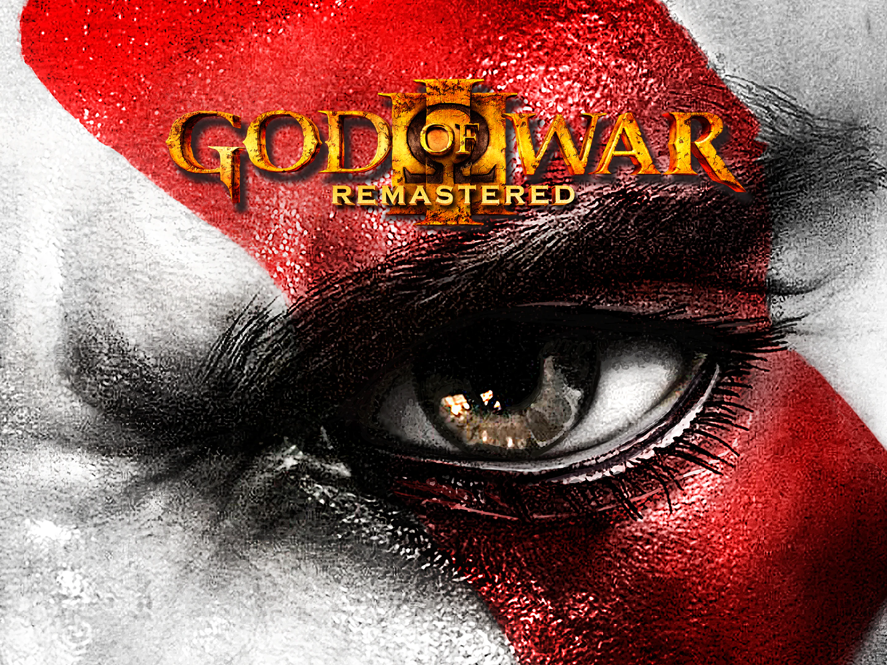

Sobre god of war

Seguindo o final de God of War II, God of War III inicia diretamente após o mesmo com uma frenética narração de abertura de Zeus discutindo as ações de Kratos, que está "comandando" um pequeno exército de Titãs resgatados da Grande Guerra (usando o poder das Irmãs). Os olímpicos imediatamente correm para a batalha; Hélios cavalga em sua carruagem sobre o Olimpo, Hermes corre pelos picos do Olimpo abaixo enquanto Zeus observa, Hércules recebe a ordem de levar suas tropas para a batalha, Hades se lança e engaja vários Titãs batalha em sua forma gigante, e Poseidon (usando sua "aquacinese") dispara do Olimpo como um míssil e executa um golpe mortal no peito de Epimeteu, e então se manifesta como um enorme ser de água e gera vários cavalos aquáticos chamados Hipocampos para ajudar na batalha. Tendo Poseidon como sua maior ameaça na batalha, já tendo dizimado numerosos Titãs e indo atrás da própria Gaia, Kratos engaja o Deus do Mar em combate e, depois de atraí-lo para o alcance de Gaia, consegue tirá-lo, já enfraquecido, de sua forma divina e arremessá-lo em plataforma separada. Os dois brigam brevemente antes de Kratos subir e espancar o Senhor do Mar selvagemente, finalmente arrancando seus olhos e quebrando seu pescoço, jogando-o, por fim, no oceano. Com a morte de Poseidon, o mar entra em cataclisma e o nível do oceano aumenta significativamente, causando uma inundação que parece engolfar o mundo inteiro e destruir quase toda a humanidade, exceto aqueles que estão no topo de Olímpia.
Depois de matar Poseidon, Gaia e Kratos alcançam a rotunda de Zeus, onde o rei dos deuses antecipa irritadamente a chegada de Kratos e, finalmente, os ataca com uma poderosa rajada que arranca uma enorme quantidade do braço de Gaia e envia os dois em uma queda em espiral Olimpo abaixo (Kratos sobrevive presumivelmente usando o Velo de Ouro para absorver a maior parte da explosão). No entanto, mesmo usando a Lâmina do Olimpo para esfaquear as costas dela, Kratos não consegue se segurar enquanto Gaia luta para sobreviver e subir de volta até Zeus. Ela o avisa que ele era apenas um peão e é dispensável agora que os Titãs chegaram a Zeus, permitindo que o espartano amargurado caísse para sua morte. Kratos contempla sua vida enquanto ele atravessa o Rio Estige e suas cavernas, e resolve escapar de Hades (mais uma vez) e destruir Zeus. A caminho do Palácio de Hades depois de ser sugado de quase todo o seu poder pelas almas mortas do Estige, ele se reúne com Atena, agora em sua nova forma. que afirma ter alcançado um "novo nível de existência" e está disposta a ajudar Kratos em sua vingança, concedendo-lhe as Lâminas do Exílio para sobreviver ao Mundo dos Mortos e os inimigos que estão à frente, e também definindo sua próxima missão de encontrar e extinguir a chama do Olimpo, a fim de derrotar Zeus.
Kratos atravessa o Mundo dos Mortos e encontra, pelo caminho, um par de almas perdidas, três estátuas dos Juízes do Mundo dos Mortos e Hefesto, que o informa cada vez mais sobre os segredos do Olimpo e de Zeus, e rabiscos misteriosos no chão que ele silenciosamente reconhece como sendo de várias pessoas de seu passado. Finalmente, entrando no palácio de Hades, ele encontra o corpo de Perséfone, que Hades havia restaurado, e engaja o próprio Senhor do Mundo dos Mortos em combate dentro de uma caverna escura. Hades enfrenta Kratos até que o sanguinário espartano consegue arrancar seu capacete e roubar suas armas, e então arrancar a própria alma de Hades e absorvê-la usando as Garras de Hades. Escapando do Mundo dos Mortos através de uma Passagem de Hipérion Kratos recomeça sua jornada Olimpo acima, exceto que agora ele enfrenta os Titãs e os Deuses - ele encontra Hélios em sua carruagem, onde, mais tarde, ele arranca a cabeça do deus sol com suas próprias mãos e recebe a Cabeça de Hélios, ele "amputa" as pernas de Hermes, adquirindo as Botas de Hermes, impiedosamente espanca seu próprio meio-irmão Hércules até a morte com os Punhos Nemeianos, quebra o pescoço de Hera depois que ela insulta Pandora, uma criação de Hefesto que é a chave para extinguir a Chama do Olimpo e revelar seu conteúdo. Kratos também encontra Afrodite e suas servas na câmara da deusa, esfaqueia o Titã Cronos na cabeça com a Lâmina do Olimpo, no Tártaro, empala Hefesto depois de ele trair Kratos ao entregá-lo para Cronos, recebe o Chicote de Nêmesis de Hefesto pouco antes de sua morte, luta contra a Rainha dos Escorpiões e, finalmente, chega à Câmara da Chama com Pandora, e é interrompido pelo próprio Zeus.
Zeus previne Pandora de seu destino e engaja Kratos em combate, embora o espartano derrote o Rei dos Deuses em um duelo e de repente mude seu pensamento. Pandora foi feita para ser a Chave da Caixa de Pandora, que é o que realmente descansa dentro da Chama do Olimpo, e teria que se sacrificar. No entanto, devido a provocações inadvertidas de Zeus, pedindo para que Kratos não "falhe em suas decisões desta vez", Kratos libera Pandora e ataca Zeus em extrema fúria, apenas para ficar chocado com a dissipação da Chama. Kratos abre a Caixa mais uma vez, assim como no primeiro jogo, apenas para descobrir que ela está vazia. Zeus zomba dele por "outro fracasso", e se teletransporta para fora a fim de se recuperar, enquanto a raiva de Kratos se torna ainda mais forte. Pai e filho se reúnem novamente em uma plataforma familiar, mas antes que qualquer um possa reivindicar a vitória, a plataforma é repentinamente abalada por Gaia (que acredita-se ter sido morta durante a luta e é motivo de muita raiva dos Titãs contra Kratos) e faz com que os dois fujam para dentro de seu corpo. Dentro de seu peito, Kratos e Zeus duelam perto de seu coração; Zeus absorve a vitalidade de seu coração e se revigora, Kratos faz o mesmo e, finalmente, Gaia é morta quando Kratos empala Zeus contra seu coração, o que aparentemente também mata Zeus.
Despertando em meio a terra rachada, Kratos encontra o corpo de Zeus empalado em uma pedra e extrai a lâmina com cuidado. No entanto, quando Kratos tenta sair, o espírito ainda ativo de Zeus, consumido por algum ódio duradouro poelo seu filho "infiel", ataca e aparentemente suga de Kratos toda a sua força de vontade, sua raiva, e o enche de medo e uma sensação de perda, deixando-o à beira da morte. Antes de morrer, Kratos compartilha uma viagem mental de última hora com Pandora servindo de guia de Pandora, cujo espírito vive dentro dele, e começa a abolir as várias coisas que atormentam sua alma - as mesmas coisas que o Zeus Astral está usando para matar sua mente, similar ao que Ares fez uma vez. Suprimindo essas magias com um sentimento de esperança, Kratos recupera a consciência e força o espírito de Zeus de volta ao seu corpo, antes de derrotar Zeus até a morte com as próprias mãos, terminando o reinado dos Olímpicos, ao que parece, de uma vez por todas.
Atena chega para parabenizar Kratos por sua vitória e pede que ele entregue a ela o poder que ele ganhou da Caixa de Pandora, mas ele revela que não havia nada dentro. Atena afirma que ele está mentindo, porque quando os males da Titanomaquia foram selados pela primeira vez na caixa, como uma medida de segurança, ela colocou na caixa a "arma mais poderosa do mundo", a Esperança, para combater os males. Ela exige que Kratos devolva esse poder que ele obteve da caixa que por direito pertence a ela, pois agora que o mundo está tomado pelo caos, ela irá reconstruí-lo sob seu domínio com o poder da esperança. Atena percebe, no entanto, que quando Kratos abriu a caixa para matar Ares, enquanto os males infectavam e tomavam conta dos deuses do Olimpo, especialmente Zeus, o poder da esperança se infundia em Kratos. A esperança tinha sido enterrada profundamente sob a raiva, sede de vingança e culpa, e quando Kratos finalmente aprendeu a perdoar a si mesmo por seu passado, ele havia liberado o poder. Atena novamente exige que Kratos lhe dê o poder, mas Kratos se recusa, e se empala na Lâmina do Olimpo. Então, um grande raio de luz azul se lança ao céu, dando a toda a humanidade o poder da Esperança. Atena fica furiosa, alegando que o homem não saberá o que fazer com a Esperança. Ela tira a espada de Kratos e parte dizendo a Kratos o quanto está desapontada pelas ações dele. Ele rosna que não deve nada a ela (um referência ao começo do segundo jogo).
Na cena pós-créditos, o local onde o corpo de Kratos estava deitado está vazio, com uma trilha de sangue saindo da beira do penhasco. Esta cena lembra a sua tentativa de suicídio em God of War.